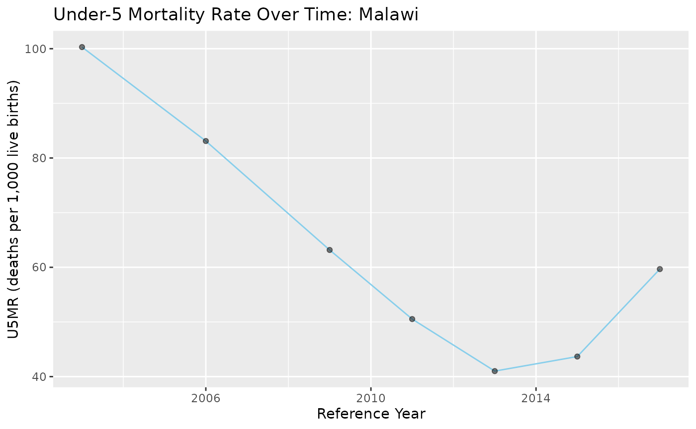
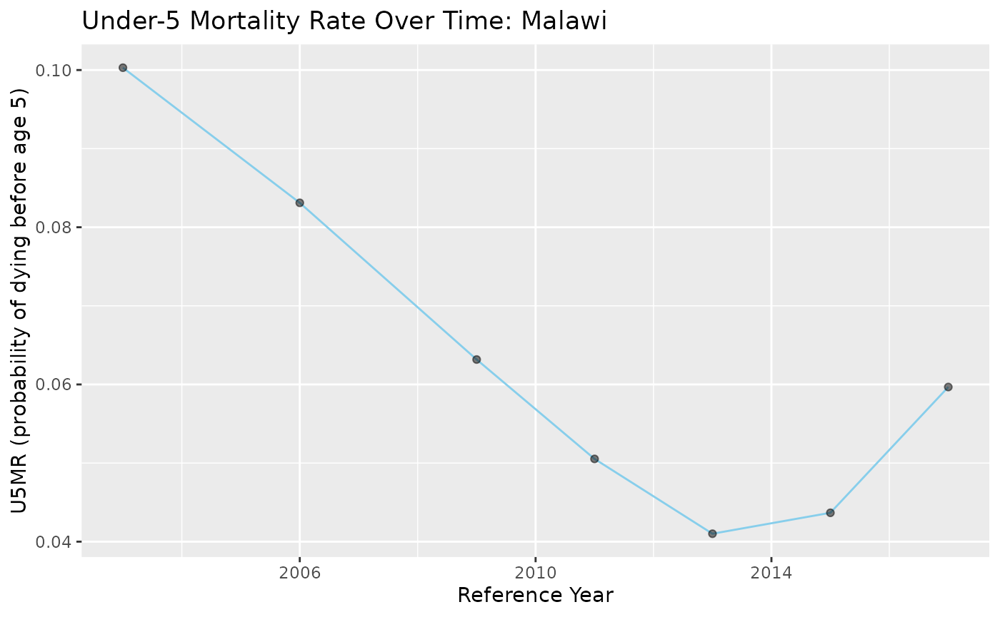
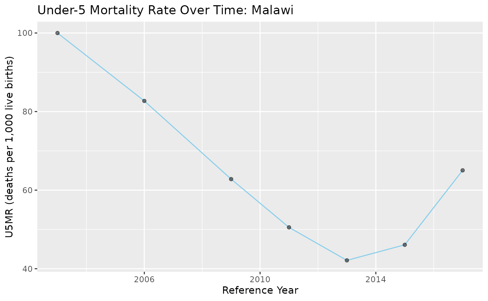
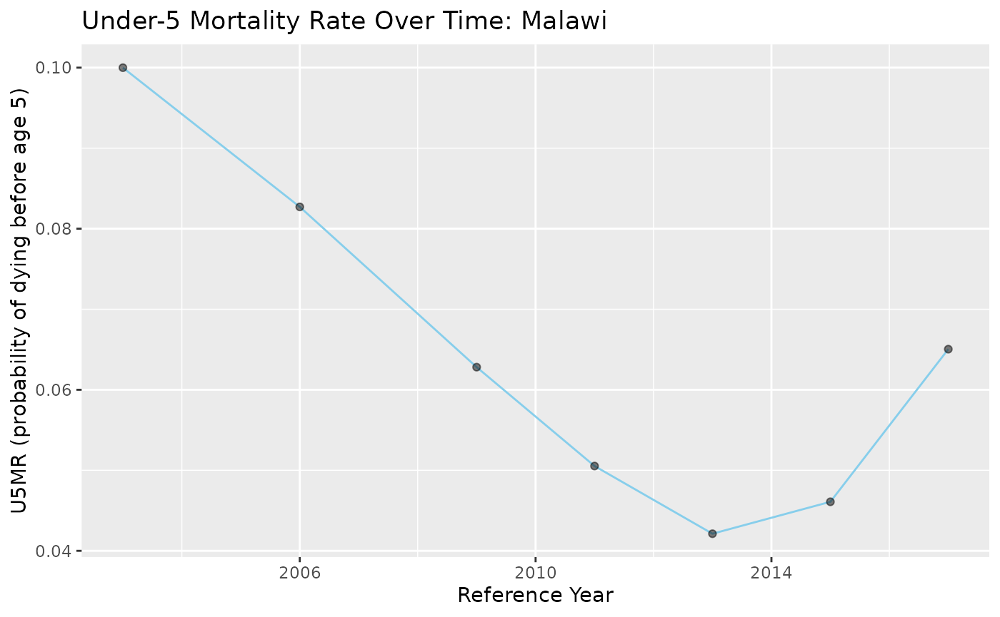

SBH_Demo
SBH_Demo.Rmd
library(SBHModeling)
library(readxl)
library(dplyr)
#>
#> Attaching package: 'dplyr'
#> The following objects are masked from 'package:stats':
#>
#> filter, lag
#> The following objects are masked from 'package:base':
#>
#> intersect, setdiff, setequal, union
library(tidyr)
library(tidyverse)
#> ── Attaching core tidyverse packages ──────────────────────── tidyverse 2.0.0 ──
#> ✔ forcats 1.0.1 ✔ readr 2.2.0
#> ✔ ggplot2 4.0.3 ✔ stringr 1.6.0
#> ✔ lubridate 1.9.5 ✔ tibble 3.3.1
#> ✔ purrr 1.2.2
#> ── Conflicts ────────────────────────────────────────── tidyverse_conflicts() ──
#> ✖ dplyr::filter() masks stats::filter()
#> ✖ dplyr::lag() masks stats::lag()
#> ℹ Use the conflicted package (<http://conflicted.r-lib.org/>) to force all conflicts to become errors
library(ggplot2)
library(patchwork)Demonstration on obtaining mortality rate estimates from SBH data to use in SAE models…
This vignette aims to demonstrate functions in this package using the deterministic Brass approach to take SBH data and obtain mortality rate estimates (i.e. the probability of dying before a given age) for different ages (i.e. under-1 mortality… under-5 mortality .. etc.), reconstruct mortality rate histories for a specified age through interpolation, and also implement the results as covariates in SAE (Small Area Estimation) models.
A note: we use functions embedding Princeton/CD life tables - in later functions we will also include UN life tables.
Specifically, we utilize SBH data on women aged from 15-49, with entries split into 5 year age bands (15-19, 20-24, … , 45-49) to create a measure of mortality - q(x) - the probability that a child dies before age x. We index age bands as i = 1,2,3,4,5,6,7 for ease. We primarily consider SBH information for BOTH female and male children combined, rather than analyze by-sex information independently. If the latter was desired, methods for obtaining q(x)’s would be similar, but to reconstruct mortality rate histories for a given age via interpolation, other life-death tables would need to be imported and used, as such life tables are dependent on whether male, female, or both children are being considered. Furthermore, functions are currently written to specifically imply dataframes having entries (column names) for both sexes.
In this notebook, as an example we take information from the 2018 Malawi Population and Housing Census’ fertility tables (holding data down to the admin-1 level) as a test case. Users should be able to replicate the code below as the data file is included in the package. In terms of SAE, we are generally interested in nmr though this will come up in later vignettes. We start by looking at Malawi as a whole without admin-1 granularity to demonstrate function usage. Note that the process of cleaning the data to make it usable will depend on the structure of the raw data itself, so the first section below is not necessarily generalized to all sources. In future cases we may be interested in using sources with more predictable structure like the census data available on IPUMS.
Data Import:
We take the data with the raw SBH information and convert it into a readable dataframe. Each district has several rows for SBH information corresponding to a specific age group. The data below is available in the package itself and thus the code can be copied as is.
path <- system.file("extdata", "MalawiSBH1.xlsx", package = "SBHModeling")
#skip 4 since these rows correspond to nested headers
df <- readxl::read_excel(path, sheet = "Table B1", skip = 4, col_names = FALSE)
#rename columns to reflect original excel names...
colnames(df) <- c(
"label", # combination of age and district label (nested structure)
"num_women", # total pop of women
"total_both", # total children born (both sexes)
"total_male", # total male children
"total_female", # total female children
"living_both", # children still living (both sexes)
"living_male", # children still living (male)
"living_female", # children still living (female)
"dead_both", # children dead (both sexes)
"dead_male", # children dead (male)
"dead_female" # children dead (female)
)
df <- df %>%
#create value for the distsrict column where it pulls from the label column only rows with no - , +
mutate(region = ifelse(!grepl("-|\\+", label), label, NA)) %>%
#fill the district name down so every row has a corresponding district label
fill(region, .direction = "down") %>%
#remove the NA rows / only keep rows where the label is a valid age range
filter(grepl("-|\\+", label)) %>%
#reorder
rename(age_group = label) %>%
dplyr::select(region, age_group, everything())
print(head(df, 12))
#> # A tibble: 12 × 12
#> region age_group num_women total_both total_male total_female living_both
#> <chr> <chr> <dbl> <dbl> <dbl> <dbl> <dbl>
#> 1 Malawi 12-14 762334 1565 794 771 1469
#> 2 Malawi 15-19 1031165 234947 119709 115238 224169
#> 3 Malawi 20-24 873999 1040403 524370 516033 1000422
#> 4 Malawi 25-29 646545 1511774 759866 751908 1452437
#> 5 Malawi 30-34 590721 2112446 1057130 1055316 2005636
#> 6 Malawi 35-39 500810 2247289 1124715 1122574 2095324
#> 7 Malawi 40-44 362429 1906246 951831 954415 1723472
#> 8 Malawi 45-49 262119 1501565 745533 756032 1310500
#> 9 Malawi 50-54 199412 1201330 593285 608045 1001726
#> 10 Malawi 55-59 162875 1016249 497713 518536 813727
#> 11 Malawi 60-64 127098 822680 401794 420886 624534
#> 12 Malawi 65+ 378674 2472145 1188665 1283480 1599523
#> # ℹ 5 more variables: living_male <dbl>, living_female <dbl>, dead_both <dbl>,
#> # dead_male <dbl>, dead_female <dbl>As we are only interested in age groups 15-19 up until 45-49, we filter out the other age groups and create an index column, i, ranging from 1:7 for each of the age groups, along with select Malawi as a whole for the region. Thus, it should be noted that after selecting the proper age groups, any given region’s information should span 7 rows (assuming complete information available).
df <- df %>% filter(
age_group %in% c(
"15-19", "20-24", "25-29", "30-34", "35-39", "40-44", "45-49")) %>%
mutate(i = case_when(
age_group == "15-19" ~ 1,
age_group == "20-24" ~ 2,
age_group == "25-29" ~ 3,
age_group == "30-34" ~ 4,
age_group == "35-39" ~ 5,
age_group == "40-44" ~ 6,
age_group == "45-49" ~ 7))
malawi <- df %>% filter(region == 'Malawi')
print(malawi)
#> # A tibble: 7 × 13
#> region age_group num_women total_both total_male total_female living_both
#> <chr> <chr> <dbl> <dbl> <dbl> <dbl> <dbl>
#> 1 Malawi 15-19 1031165 234947 119709 115238 224169
#> 2 Malawi 20-24 873999 1040403 524370 516033 1000422
#> 3 Malawi 25-29 646545 1511774 759866 751908 1452437
#> 4 Malawi 30-34 590721 2112446 1057130 1055316 2005636
#> 5 Malawi 35-39 500810 2247289 1124715 1122574 2095324
#> 6 Malawi 40-44 362429 1906246 951831 954415 1723472
#> 7 Malawi 45-49 262119 1501565 745533 756032 1310500
#> # ℹ 6 more variables: living_male <dbl>, living_female <dbl>, dead_both <dbl>,
#> # dead_male <dbl>, dead_female <dbl>, i <dbl>Constructing q(x):
We begin by constructing q(x) - the probability that a child dies by age x, for a given x. We outline the method briefly here:
Each age band corresponds to a specific value of x - for example, the
age group of 15-19 corresponds to computing q(1). Similarly:
15-19: i = 1, x = 1
20-24: i = 2, x = 2
25-29: i = 3, x = 3
30-34, i = 4, x = 5
35-39, i = 5, x = 10
40-44, i = 6, x = 15
45-49, i = 7, x = 20
Let the average parity per woman for the specified age group i be defined as P(i) = CEB(i) / FP(i), where CEB(i) is the number of children ever born to (corresponding to total_both in our dataframe), and FP(i) be the total number of women in the age group i (corresponding to num_women in our dataframe).
Then, let the fraction of children dead to mothers in the age group i be D(i), with D(i) = CD(i) / CEB(i), with CD(i) being the number of children who died to mothers in age group i (corresponding to dead_both in our dataframe).
To compute q(x), we take the age group i corresponding to the x of
interest and then use the formula:
q(x) = D(i) * {a(i) + b(i)[P(1)/P(2)] + c(i)[P(2)/P(3)]}
The coefficients for a, b, and c come from Coale-Demeny life tables. These can be found in UN Manual X: Indirect Techniques for Demographic Estimation, Table 47 (Coefficients for estimation of child mortality multipliers, Trussell variant). The coefficients will change depending on the family being utilized, though for ease we have included them all in the function itself such that the user can specify which to use.
The inputs of the function should then be:
- A dataframe specific to a region with 7 rows, one for each age group
from 15-19 up until 45-49. There should be columns explicitly named:
region, num_women, total_both, and dead_both. There should also be a
column named i corresponding to the age groups.
- An integer, i, ranging from 1:7 and corresponding to the x in the q(x)
being computed
- The family for the life tables being used (‘North’, ‘West’, ‘East’,
‘South’)
One can also refer to the reference page for documentation. The reason
for using a (region’s) dataframe opposed to a single row for computing a
single q(x) is that the equation requires computing parity for several
age groups.
The returns will then be the region name, the q(x), and k(x), which is essentially the multiplier of D(i) above, or in other words, the portion of the equation : {a(i) + b(i)[P(1)/P(2)] + c(i)[P(2)/P(3)]}
Alternative explanations with more depth can be found in Ch. 3 of the Manual, or for a condensed explanation the paper: ‘A probabilistic model for analyzing summary birth history data’ by Wilson, Wakefield.
As an example, we compute q(5), or U5MR, using the West family, s.t. i = 4:
sbh_brass_qx(malawi, 4, 'West')
#> $region
#> [1] "Malawi"
#>
#> $ki
#> [1] 0.9993204
#>
#> $qi
#> [1] 0.05052788Constructing t(i) / recovering the reference year:
We now move to constructing t(i). Each calculation above of q(x) from a given age group is not necessarily based on the census year itself, but rather from a prior reference year (as keep in mind different aged women imply estimates from varying times).
The framework is somewhat similar, where we use the equation:
t(i) = {e(i) + f(i)[P(1)/P(2)] + g(i)[P(2)/P(3)]}
and the final reference year can be taken by subtracting t(i) from the
original census year.
The e, f, and g coefficients similarly come from simulations of Coale-Demeny life tables. In this package, we use those in the same Manual X but in Table 48 (Coefficients for estimation of the reference period to which the values of q(x) estimated from data classified by age refer).
The inputs for the function are about identical to the previous function, with the addition of the census year, which should be a single (4-digit) number referring to the year that the census was executed. This number doesn’t need to be an integer. If, for example, we have a census taken in June 2005, we could input the number 2005.50.
As an example, we compute t(5), or the reference period for U5MR, s.t. i = 4:
sbh_brass_ti(malawi, 4, 'West', 2018)
#> [1] 2011.156Obtaining comprehensive estimates for a region
To obtain all q(x)s and reference years for a given region, we can simply iterate through all rows of that region’s SBH information and obtain a dataframe like so:
region_name <- c()
ks <- c()
qs <- c()
yrs <- c()
for (i in 1:7){
result_brassq <- sbh_brass_qx(malawi, i, 'West')
region_name[i] <- result_brassq$region
ks[i] <- result_brassq$ki
qs[i] <- result_brassq$qi
yrs[i] <- sbh_brass_ti(malawi, i, 'West', 2018)
}
malawi_results <- data.frame(region = region_name,
q_i = qs, k_i = ks, i = 1:7, x = c(1,2,3,5,10,15,20), ref_year = yrs)
malawi_results
#> region q_i k_i i x ref_year
#> 1 Malawi 0.04649312 1.0134921 1 1 2016.854
#> 2 Malawi 0.03916067 1.0190560 2 2 2015.477
#> 3 Malawi 0.03864409 0.9845651 3 3 2013.488
#> 4 Malawi 0.05052788 0.9993204 4 5 2011.156
#> 5 Malawi 0.06889286 1.0188014 5 10 2008.609
#> 6 Malawi 0.09655789 1.0070529 6 15 2005.905
#> 7 Malawi 0.12713859 0.9991723 7 20 2003.004Reconstructing historical estimates for a given q(x)
As seen above, we now have the means of obtaining q(x) for i = 1:7 for a given region, along with the reference year. Instead of looking at q(x)’s corresponding to different mortality rates (i.e. under-1 mortality, under-5 mortality, etc.), we can also look at a single measure, i.e. U5MR, as a historical time series based on the constructed estimates.
We can do this through (Brass-Macrae Method) linear interpolation, by converting different q(x) measures to other q(y)s. For example, if we had a q(1) estimate and a reference year, we could convert that q(1) to q(5) to obtain the U5MR estimate for that year. The conversion is done again by utilizing Coale-Demeny tables (specific to families). Essentially, the life tables have information on ‘mortality levels’ and for each, the associated q(x)s. If we are interested in converting our estimated q(x) to q(y), we go down the column for the corresponding q(x) in the life table and find the value closest to our estimated value, and then find the q(y) value for that row. Generally, we use linear interpolation in practice to interpolate between the mortality levels in the tables.
As defined in (Wilson, Wakefield),
Specifically, letting j = the level and qe(x) being the estimated
q(x),
q_j+1(x) < q_e(x) + q_j(x)
Then, q(y) = (1-h)q_j(y) + hq_j+1(y)
and h = [q_e(x) - q_j(x)]/[q_j+1(x) - q_j(x)]
The life tables can be found in the ‘Step-by-Step Guide to the Estimation of Child Mortality’ manual by the UN. Specifically, we refer to Tables A.I.9. - A.I.12, ‘Model values for probabilities of dying, q(x), both sexes combined (for a given family)’. Again, we encode these in the functions themselves.
The function then starts by defining a helper function (operation for a single row) where for a given q(x) result (denoted qe(x) above), and a defined y to convert to q(y), along with a specific life death table to refer to, the interpolated estimate of q(y) based on qe(x) and a life table (contingent on selecting the family) is returned. Then, the function of interest applies this to a dataframe similar to the one in the section above having the comprehensive estimated q_i’s, reference years, and x’s for all age bands for a given region. The user specifies the family for the table they want to use along with what q(y) they want to convert all of the result qe(x)s to. The returned product will be the same inputted summary dataframe but now with an appended column for the under_i mortality rates for the age of interest.
If you have been using the package functions up to this point, then if you input the dataframe from the step above where the q(x) estimates and reference year estimates are obtained and held in that exact dataframe format, then you can directly input that into the interpolation function, as all the column names will precisely match (which is indeed required for usage). Similarly, the family is just the same family you’ve been using throughout, and the input y should be a single integer that can be in the set {1,2,3,5,10,15,20}, which just specifies what historical mortality rates you are interested in obtaining. For more information on the inputs, one can view the reference page.
malawi_q5 <- sbh_interpolation_complete(malawi_results, 'West', 5)
malawi_q5
#> # A tibble: 7 × 7
#> # Rowwise:
#> region q_i k_i i x ref_year q5_mr
#> <chr> <dbl> <dbl> <int> <dbl> <dbl> <dbl>
#> 1 Malawi 0.0465 1.01 1 1 2017. 0.0597
#> 2 Malawi 0.0392 1.02 2 2 2015. 0.0437
#> 3 Malawi 0.0386 0.985 3 3 2013. 0.0410
#> 4 Malawi 0.0505 0.999 4 5 2011. 0.0505
#> 5 Malawi 0.0689 1.02 5 10 2009. 0.0632
#> 6 Malawi 0.0966 1.01 6 15 2006. 0.0831
#> 7 Malawi 0.127 0.999 7 20 2003. 0.100We can also plot the results (both as the mortality rate raw and deaths per 1,000 live births, which is frequently displayed)
malawi_q5 %>%
mutate(
ref_year_rd = round(ref_year),
u5mr_per_1000 = q5_mr * 1000
) %>%
ggplot(aes(x = ref_year_rd, y = u5mr_per_1000)) +
geom_line(color = "skyblue") +
geom_point(alpha = 0.5) +
labs(
title = "Under-5 Mortality Rate Over Time: Malawi",
x = "Reference Year",
y = "U5MR (deaths per 1,000 live births)"
)
malawi_q5 %>%
mutate(ref_year_rd = round(ref_year)) %>%
ggplot(aes(x = ref_year_rd, y = q5_mr)) +
geom_line(color = "skyblue") +
geom_point(alpha = 0.5) +
labs(
title = "Under-5 Mortality Rate Over Time: Malawi",
x = "Reference Year",
y = "U5MR (probability of dying before age 5)"
)
## Reconstructing historical estimates for a given q(x) : IUSSP
technique In addition to the described interpolation technique above for
reconstructing estimates, there is another method that is outlined on
IUSSP’s ‘Indirect estimation of child mortality’ page, outlined in
detail. The same techniques are used for calculating qx and reference
years, ti, but converting estimates to a single qx are slightly
different. The process is briefly described here: - Take the estimated
q(x) and convert it to the logit scale - Calculate the difference
between this transformed value and the standard model life table’s logit
for that same x/age - Carry this difference, or adjustment, over to the
standard model life table’s lgoit for the age group of interest to map
to (y) - Convert back to a probability by doing e^2(…) / (1 +
e^2(…))
The model life tables supply standard patterns of mortality for ages. In this use case, as is used in the IUSSP outline, we use the standard table values of combined sexes with expectation of life at birth of 60 years. The tables provide lx and Lx for each age, but the IUSSP site also supplies the raw and standard logits of such values (specifically by taking 0.5 * ln((1-lx)/lx)). These are embedded in the function itself.
We calculate and plot the mapping to q5mr once again below for the same Malawi census. For more information on the method, one can reference demographicestimation.iussp.org. In the ‘IUSSP Verification’ vignette, we also use our package on an example census to illustrate our calculations matching up with those outlined on the website.
malawi_q5_logit <- sbh_logit_interpolation_complete(malawi_results, 'West', 5)
malawi_q5_logit
#> # A tibble: 7 × 7
#> # Rowwise:
#> region q_i k_i i x ref_year q5_mr
#> <chr> <dbl> <dbl> <int> <dbl> <dbl> <dbl>
#> 1 Malawi 0.0465 1.01 1 1 2017. 0.0650
#> 2 Malawi 0.0392 1.02 2 2 2015. 0.0461
#> 3 Malawi 0.0386 0.985 3 3 2013. 0.0421
#> 4 Malawi 0.0505 0.999 4 5 2011. 0.0505
#> 5 Malawi 0.0689 1.02 5 10 2009. 0.0628
#> 6 Malawi 0.0966 1.01 6 15 2006. 0.0827
#> 7 Malawi 0.127 0.999 7 20 2003. 0.1000
malawi_q5_logit %>%
mutate(
ref_year_rd = round(ref_year),
u5mr_per_1000 = q5_mr * 1000
) %>%
ggplot(aes(x = ref_year_rd, y = u5mr_per_1000)) +
geom_line(color = "skyblue") +
geom_point(alpha = 0.5) +
labs(
title = "Under-5 Mortality Rate Over Time: Malawi",
x = "Reference Year",
y = "U5MR (deaths per 1,000 live births)"
)
malawi_q5_logit %>%
mutate(ref_year_rd = round(ref_year)) %>%
ggplot(aes(x = ref_year_rd, y = q5_mr)) +
geom_line(color = "skyblue") +
geom_point(alpha = 0.5) +
labs(
title = "Under-5 Mortality Rate Over Time: Malawi",
x = "Reference Year",
y = "U5MR (probability of dying before age 5)"
)
From this example, we see generally similar results with the linear
interpolation method.
Closing Remarks
One overarching goal of using these methods is to obtain different age-specific (national) mortality rate estimates over time to create time-series like that above, and then compare those to estimates from different sources (i.e. childmortality.org). But also recall that since we can take any specific district dataframe, if we have the data for sub-national areas we can also obtain these estimates and time-series at finer geographic granularity. More importantly, the goal of obtaining these estimates is to use them as covariates in SAE methods - specifically the Fay-Herriot model. For nmr especially, using SBH information can be of great interest given the possibility for different (estimated) mortality rates to be highly correlated with the outcome and thus increase precision of model estimates.
As an example of how one might obtain covariates for mortality rate estimates at a given level (i.e. q(1) since this is the closest we have to nmr), we show an example below with the data loaded in initially that doesn’t contain just the national level, but also districts corresponding to admin-1 granularity in the surveyPrev/SUMMER package. We filter out the national and northern/central/southern region entries since these are at a larger geographic level than admin-1. The rest of the areas are admin1 areas (and/or fractions of them).
df_ad1 <- df %>% filter(!(region %in% c('Malawi', 'Northern Region', 'Central Region', 'Southern Region')))
districts <- unique(df_ad1$region)
q1s_west <- vector('list', length(unique(df_ad1$region)))
q1s_west <- lapply(districts, function(dist) {
dist_df <- df_ad1 %>% dplyr::filter(region == dist)
#adjust for i as needed here
sbh_brass_qx(dist_df, 1, 'West')$qi
})
data.frame(district = districts,
q1_w = unlist(q1s_west))
#> district q1_w
#> 1 Chitipa 0.05243302
#> 2 Karonga 0.04360339
#> 3 Nkhatabay 0.04691349
#> 4 Rumphi 0.04344291
#> 5 Mzimba 0.05091521
#> 6 Likoma 0.06206872
#> 7 Mzuzu City 0.03353816
#> 8 Kasungu 0.05125200
#> 9 Nkhotakota 0.04577698
#> 10 Ntchisi 0.05187005
#> 11 Dowa 0.05637333
#> 12 Salima 0.04595999
#> 13 Lilongwe Rural 0.05494543
#> 14 Mchinji 0.04893741
#> 15 Dedza 0.05151612
#> 16 Ntcheu 0.04462808
#> 17 Lilongwe City 0.04982897
#> 18 Mangochi 0.04421292
#> 19 Machinga 0.04782479
#> 20 Zomba Rural 0.04336279
#> 21 Chiradzulu 0.04440231
#> 22 Blantyre Rural 0.03170167
#> 23 Mwanza 0.05557607
#> 24 Thyolo 0.04297145
#> 25 Mulanje 0.04385964
#> 26 Phalombe 0.04621827
#> 27 Chikwawa 0.04218193
#> 28 Nsanje 0.04365220
#> 29 Balaka 0.04227668
#> 30 Neno 0.03066900
#> 31 Zomba City 0.04933034
#> 32 Blantyre City 0.04517367We do stress that estimates using this deterministic method ARE NOT perfect and we don’t expect them to be - we just intend on using them as auxiliary information in other models. We will cover using these in SAE models in a different vignette.